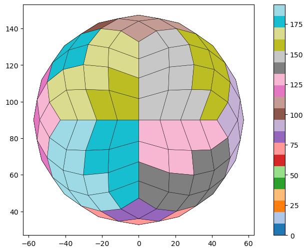
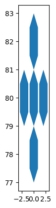

import geopandas as gpd
import numpy as np
from shapely.geometry import Polygon
import pandas as pdb
import healpy as hp
import pandas as pddef healpix_to_geodataframe(nside: int, pixel_id: int | list[int] | str = 'all', order: str = 'NESTED') -> gpd.GeoDataFrame:
"""
Converts HEALPix pixel(s) to a GeoDataFrame containing boundary
polygon(s) in the WGS84 Geographic CRS (EPSG:4326).
Args:
nside: The HEALPix resolution parameter.
pixel_id: The index of a HEALPix pixel, a list of pixel indices, or 'all' to generate all pixels.
order: The pixel ordering scheme ('NESTED' or 'RING').
Returns:
A geopandas.GeoDataFrame with row(s) representing the cell geometry/geometries.
"""
# Handle 'all' option - generate all pixels for the given nside
if pixel_id == 'all':
npix = hp.nside2npix(nside)
pixel_ids = list(range(npix))
# Handle single pixel_id or list of pixel_ids
elif isinstance(pixel_id, int):
pixel_ids = [pixel_id]
else:
pixel_ids = pixel_id
data = []
for pid in pixel_ids:
# 1. Get vertices in spherical coordinates (theta, phi)
# theta (colatitude) is 0 at North Pole, pi at South Pole
# phi (longitude) is 0 to 2*pi
# hp.boundaries returns shape (2, n_vertices) where first row is theta, second is phi
vertices = hp.boundaries(nside, pid, step=1, nest=(order == 'NESTED'))
vertices_theta = vertices[0]
vertices_phi = vertices[1]
# 2. Convert spherical coordinates to geographic (lat, lon) in degrees
# Latitude (lat): 90 - degrees(theta)
# Longitude (lon): degrees(phi)
vertices_lat = np.degrees(np.pi/2 - vertices_theta)
vertices_lon = np.degrees(vertices_phi)
# 3. Handle longitude wrapping (for cells crossing the anti-meridian,
# ensuring longitudes are in the range [-180, 180])
vertices_lon[vertices_lon > 180] -= 360
# 4. Create Shapely Polygon from (lon, lat) coordinates
# Shapely/GeoPandas expects (lon, lat) order
cell_polygon = Polygon(zip(vertices_lon, vertices_lat))
# 5. Add to data list
data.append({
'pixel_id': pid,
'nside': nside,
'order': order,
'geometry': cell_polygon
})
# Create GeoDataFrame
gdf = gpd.GeoDataFrame(
data,
crs='EPSG:4326' # Standard WGS84 Geographic CRS
)
return gdfpd.options.display.max_colwidth = 1000# Example with all pixels for nside=8 (generates 768 pixels)
gdf_multi = healpix_to_geodataframe(nside=4, pixel_id='all')
gdf_multi| pixel_id | nside | order | geometry | |
|---|---|---|---|---|
| 0 | 0 | 4 | NESTED | POLYGON ((38.19719 51.80281, 31.38661 43.02662, 40.51423 49.48577, 46.97338 58.61339, 38.19719 51.80281)) |
| 1 | 1 | 4 | NESTED | POLYGON ((41.25719 62.43283, 38.19719 51.80281, 46.97338 58.61339, 49.90703 69.32783, 41.25719 62.43283)) |
| 2 | 2 | 4 | NESTED | POLYGON ((27.56717 48.74281, 20.67217 40.09297, 31.38661 43.02662, 38.19719 51.80281, 27.56717 48.74281)) |
| 3 | 3 | 4 | NESTED | POLYGON ((30.19753 59.80247, 27.56717 48.74281, 38.19719 51.80281, 41.25719 62.43283, 30.19753 59.80247)) |
| 4 | 4 | 4 | NESTED | POLYGON ((39.45497 73.65722, 41.25719 62.43283, 49.90703 69.32783, 48.66617 80.3197, 39.45497 73.65722)) |
| ... | ... | ... | ... | ... |
| 187 | 187 | 4 | NESTED | POLYGON ((-49.90703 69.32783, -48.66617 80.3197, -39.45497 73.65722, -41.25719 62.43283, -49.90703 69.32783)) |
| 188 | 188 | 4 | NESTED | POLYGON ((-38.19719 51.80281, -41.25719 62.43283, -30.19753 59.80247, -27.56717 48.74281, -38.19719 51.80281)) |
| 189 | 189 | 4 | NESTED | POLYGON ((-31.38661 43.02662, -38.19719 51.80281, -27.56717 48.74281, -20.67217 40.09297, -31.38661 43.02662)) |
| 190 | 190 | 4 | NESTED | POLYGON ((-46.97338 58.61339, -49.90703 69.32783, -41.25719 62.43283, -38.19719 51.80281, -46.97338 58.61339)) |
| 191 | 191 | 4 | NESTED | POLYGON ((-40.51423 49.48577, -46.97338 58.61339, -38.19719 51.80281, -31.38661 43.02662, -40.51423 49.48577)) |
192 rows × 4 columns
ax = gdf_multi.plot(
column='pixel_id', # use 'column' not 'color'
cmap='tab20',
legend=True,
figsize=(10, 6),
linewidth=0.3,
edgecolor='black'
)
ax.set_aspect('equal')
def generate_wgs84_polygons(centers: list[tuple[float, float]],
n_sides: int,
radius_deg: float,
rotation_deg: float = 0.0) -> gpd.GeoDataFrame:
"""
Generates a GeoDataFrame containing regular N-sided polygons
(e.g., hexagons, squares) centered at specified lon/lat coordinates.
NOTE: The 'radius_deg' defines the size in degrees of longitude/latitude space.
This function is for visual/modeling purposes where WGS84 coordinates
are used as a flat Cartesian plane (non-geographical analysis).
Args:
centers: A list of tuples, where each tuple is (longitude, latitude)
for the center of a polygon.
n_sides: The number of sides of the regular polygon (e.g., 6 for a hexagon).
radius_deg: The radius of the polygon in degrees (distance from center
to a vertex).
rotation_deg: The rotation angle of the polygon in degrees
(0 degrees means a side or vertex points North/East).
Returns:
A geopandas.GeoDataFrame with the generated polygons, CRS is WGS84 (EPSG:4326).
"""
polygons_data = []
# Convert rotation angle to radians
rotation_rad = np.radians(rotation_deg)
# Calculate the angles for the vertices
# Start angle adjusts for the initial rotation
angles = np.linspace(0, 2 * np.pi, n_sides, endpoint=False) + rotation_rad
for i, (center_lon, center_lat) in enumerate(centers):
# Calculate x and y coordinates of vertices relative to the center
# Since we treat lon/lat as a Cartesian plane, use simple trig:
x_vertices = center_lon + radius_deg * np.cos(angles)
y_vertices = center_lat + radius_deg * np.sin(angles)
# Create Shapely Polygon from (lon, lat) coordinates
# zip(x_vertices, y_vertices) provides (lon, lat) tuples
polygon = Polygon(zip(x_vertices, y_vertices))
polygons_data.append({
'id': i,
'center_lon': center_lon,
'center_lat': center_lat,
'geometry': polygon
})
# Create GeoDataFrame with WGS84 CRS
gdf = gpd.GeoDataFrame(
polygons_data,
crs='EPSG:4326'
)
return gdf# --- Example Usage (Do not run) ---
# Define centers for a small cluster similar to the logo:
center_pts = np.array([
(0.0, 0.0),
(2.0, 0.0),
(-2.0, 0.0),
(0.0, 2.0),
(0.0, -2.0)
])
fixed_number = 80.0 # adjust this value as needed
center_pts[:, 1] += fixed_number
center_pts
# Generate Hexagons (n_sides=6) with a radius of 1.0 degree, rotated by 30 degrees
gdf_hexagons = generate_wgs84_polygons(
centers=center_pts,
n_sides=6,
radius_deg=1.0,
rotation_deg=30.0
)
gdf_hexagons.plot()